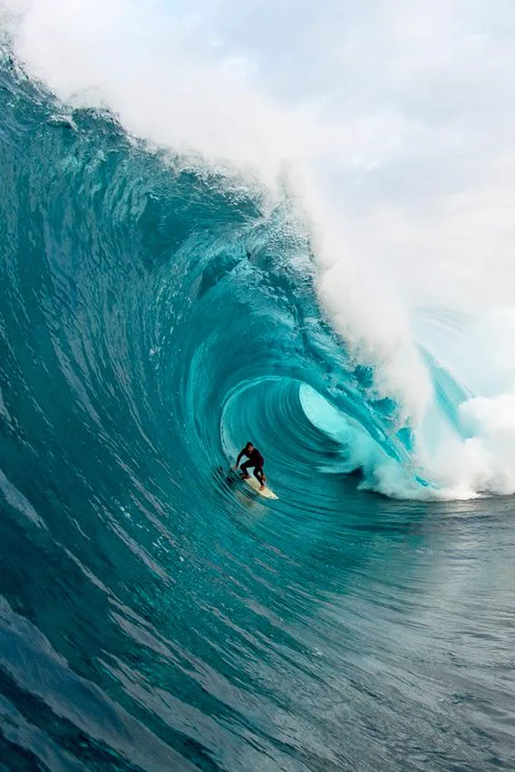

How Adrena works
The biggest thing Adrena does differently is link weather forecasts to bookings. The app watches the conditions and makes sure your lesson happens when you can actually ride.

How weather protection works
From fetching the weather data to an automatic decision: it all happens without you lifting a finger.
- 1Weather data
We take the forecast for every lesson spot from the open data of the Lithuanian Hydrometeorological Service (api.meteo.lt).
- 2Rules for every sport
Kitesurfing depends on wind (6–10 m/s for beginners), surfing on wave height, other sports on rain and thunderstorms.
- 3Colour tags
Next to each day you see whether conditions are good, borderline or unsuitable, before you book.
- 4Automatic decision
If the forecast turns bad, you and the instructor get an alert with a new time, or the money is refunded.
We check certificates (IKO, PADI and others) and insurance before giving the "Verified" badge.
After the lesson the instructor marks the skills you learned, and levels follow international systems.
You pay up front and the instructor is paid after the lesson through a trusted payment provider such as Stripe.
A short quiz helps you pick a sport, and over time the data we collect will suggest your next step more precisely.
When a lesson goes ahead and when it does not
Every sport has its own rules, based on instructor experience and IKO recommendations.
For beginners: 6–10 m/s is good. 5–6 or 10–12 m/s is borderline. Below 5 or above 12 m/s the lesson is moved. Gusts more than 4 m/s above the average speed also count as borderline.
Wave height data is planned for the future. For now we use the wind rules and the instructor's judgement.
A thunderstorm or heavy rain moves the lesson automatically. Instructors can add their own rules on top.
From beginner to riding on your own
After every lesson the instructor marks the skills you learned. The app shows where you are and what it takes to reach the next level.
International levels
Kitesurfing uses the IKO system (4 levels: Discovery, Intermediate, Independent, Advanced), diving uses PADI and skiing uses international snow levels.
Instructor feedback
After the lesson the instructor marks what you learned and leaves a note. You see your strengths and what to work on.
Next step suggestion
The app suggests the best courses for your level and location. No more guessing what to do next.
History and stats
See all your past lessons, the time you spent on the sport and how your level changed over time.